[UCAS强化学习]4·无模型预测
1 简介
上节课我们学习了使用动态规划求解一个已知的 MDP——我们学习了迭代策略评估来评价某个给定策略（称作预测问题），以及策略迭代和价值迭代来寻找最优策略（称作控制问题）。这些动态规划方法的共同点是，它们都要求“模型”或“环境”，也就是 \(\mathcal P\) 矩阵和 \(\mathcal R\) 向量是已知的，因此我们将它们称为基于模型的 (model-based) 方法。而这两节课我们将探讨无模型 (model-free) 方法，其中这节课关注无模型预测，而下节课关注无模型控制。
我们将学习 3 种无模型预测方法：蒙特卡洛学习，时间差分学习和 TD(λ).
2 蒙特卡洛学习
蒙特卡洛 (Monte-Carlo, MC) 方法是一类用采样近似期望的方法。在强化学习的背景下，这意味着我们通过采样一系列轨迹 (episodes) 进行学习，而不需要知道转移概率矩阵 \(\mathcal P\) 和奖励向量 \(\mathcal R\) 到底是多少。运行 MC 方法通常要求：所有轨迹都到达终止状态或者轨迹足够长。
给定策略 \(\pi\)，采样的轨迹可以表示为一个随机变量序列，记作： \[ S_0,A_0,R_1,\ldots,S_k\sim \pi \] MC 方法的思想就是用回报的经验均值来近似回报的真实期望（即价值函数）。具体而言，那么对于某个状态 \(s\in\mathcal S\)，只需从它开始采样若干条样本，通过计算这些样本轨迹的回报即可近似价值函数 \(v_\pi(s)\).
2.1 首次访问的 MC 策略评估
由于一条轨迹可能会反复回到同一个状态，所以我们有两种计数策略。首次访问的 MC 策略评估只考虑第一次访问状态 \(s\) 的时候，它未来的回报是怎样的。具体而言，为了估计状态 \(s\) 的价值函数，我们：
- 采样一条轨迹，找到第一次访问状态 \(s\) 的时刻 \(t\)
- \(N(s)\gets N(s)+1,\,S(s)\gets S(s)+G_t\)
- 重复上述过程若干次
- 计算 \(V(s)=S(s)/N(s)\)，根据大数定律，当 \(N(s)\to\infty\) 时，\(V(s)\to v_\pi(s)\)
注：由于第 2 步涉及到了计算 \(G_t\)，是未来整个过程的加权奖励，因此我们必须要求轨迹最后终止。
2.2 每次访问的 MC 策略评估
另一种计数策略是把每一次访问都纳入考量，具体来说，
- 采样一条轨迹
- 对于该轨迹中每次访问状态 \(s\) 的时刻 \(t\)，执行：\(N(s)\gets N(s)+1,\,S(s)\gets S(s)+G_t\)
- 重复上述过程若干次
- 计算 \(V(s)=S(s)/N(s)\)，当 \(N(s)\to\infty\) 时，\(V(s)\to v_\pi(s)\)
2.3 增量式 MC 更新
对一组不断产生新数据的序列 \(x_1,x_2,\ldots,x_{k-1},x_k\)，可以增量式地计算当前观测的均值 \(\mu_1,\mu_2,\ldots,\mu_{k-1},\mu_k\)： \[ \begin{align} \mu_k&=\frac{1}{k}\sum_{j=1}^kx_j\\ &=\frac{1}{k}\left(x_k+\sum_{j=1}^{k-1}x_j\right)\\ &=\frac{1}{k}(x_k+(k-1)\mu_{k-1})\\ &=\mu_{k-1}+\frac{1}{k}(x_k-\mu_{k-1}) \end{align} \] 这个递推式可以解释为：新的均值是原来的均值加上一个误差项 \(\frac{1}{k}(x_k-\mu_{k-1})\).
将其用在 MC 方法中，我们称之为增量式 MC 更新：
- 采样一条轨迹 \(s_0,a_0,r_1,\ldots,s_T\)
- 对于每一个状态 \(s_t\) 及其回报 \(G_t\)，计算：\(N(s_t)\gets N(s_t)+1,\,V(s_t)\gets V(s_t)+\dfrac{1}{N(s_t)}(G_t-V(s_t))\)
- 重复上述过程
如果我们把系数 \(1/N(s_t)\) 替换为某个固定常数 \(\alpha\)，那就得到了指数移动平均的形式： \[ V(s_t)\gets V(s_t)+\alpha(G_t-V(s_t)) \] 指数移动平均在非平稳（波动很大）的情形下很有用，我们不希望过早的历史信息对现在仍有相同比重的影响。
3 时间差分学习
3.1 TD
时间差分 (Time Difference, TD) 也是通过采样来学习的，但与 MC 不同的是，TD 不需要采样完整的、最后终止的轨迹，它借助了自举法 (bootstrapping) 去估计未来的回报。
TD 算法可以表述为：
采样一条轨迹
使用估计回报在线更新价值函数： \[ V(s_t)\gets V(s_t)+\alpha({\color{purple}{r_{t+1}+\gamma V(s_{t+1})}}-V(s_t)) \] 其中 \(r_{t+1}+\gamma V(s_{t+1})\) 称为 TD 目标，\(\delta_t=r_{t+1}+\gamma V(s_{t+1})-V(s_t)\) 称作 TD 误差.
重复上述过程
可以看见，与增量式 MC 更新相对比，TD 用一个带有估计性质的 \(r_{t+1}+\gamma V(s_{t+1})\) 代替了真实的 \(G_t\)，这就是自举法的含义——用自己手上的估计值而非真实值。受益于此，TD 可以在智能体运行过程中的每一时刻在线更新，而 MC 在采样出完整的轨迹之后才能更新。
我们可以举一个例子说明在线更新的好处。考虑一个开车的场景，在某一条轨迹中，我们与对面驶来的车擦肩而过——差点就车祸但是没有车祸。如果使用 MC 方法，我们不会得到任何负面的反馈，因为车祸毕竟没有发生，但使用 TD 方法，我们将期望车祸很有可能发生，因而会立刻更新价值函数，而不是一定要等到挂掉之后才能更新。
3.2 偏差/方差权衡
根据定义，回报 \(G_t\) 是价值函数 \(v_\pi(s_t)\) 的无偏估计： \[ v_\pi(s_t)=\mathbb E_{\pi}[G_t] \] 容易知道，真实的 TD 目标 \(r_{t+1}+\gamma v_\pi(s_{t+1})\) 也是无偏估计： \[ v_\pi(s_t)=\mathbb E_\pi[R_{t+1}+\gamma v_\pi(S_{t+1})] \] 但是 TD 目标 \(r_{t+1}+\gamma V(s_{t+1})\) 却是有偏估计： \[ v_\pi(s_t)\neq\mathbb E_{\pi}[R_{t+1}+\gamma V_\pi(s_{t+1})] \] 这个偏差来自于自举法的缺陷，与统计学中样本方差是真实方差的有偏估计是一样的道理。
另一方面，TD 目标却比回报 \(G_t\) 具有更小的方差。这是因为回报的计算涉及整个轨迹上的随机动作、转移状态、奖励等等，随机因素很多；而 TD 目标只考虑下一时刻的随机动作、转移状态、奖励，随机因素少，因此前者将比后者具有更大的方差。
总而言之：
- MC 高方差，零偏置
- 好的收敛性
- 对初始值不敏感
- 简单，易于理解
- TD 低方差，有偏置
- 通常效率更高
- TD(0) 能够收敛到 \(v_\pi(s)\)
- 对初始值更敏感
例子：随机游走
为了直观对比 MC 和 TD 的收敛速度，我们考虑下面这个随机游走的例子。
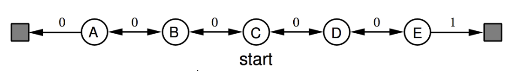
从 C 点开始随机游走，如果终止在右边获得 1 的奖励，终止在左边获得 0 的奖励。
假设我们把所有状态的价值函数都初始化为 0.5，随着采样数量的增加，价值函数确实逐渐逼近真实值：
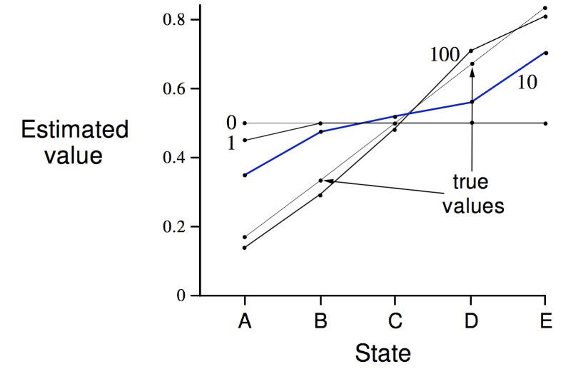
不同的方法（MC v.s. TD）、不同的步长 \(\alpha\)，有着不同的收敛速度：
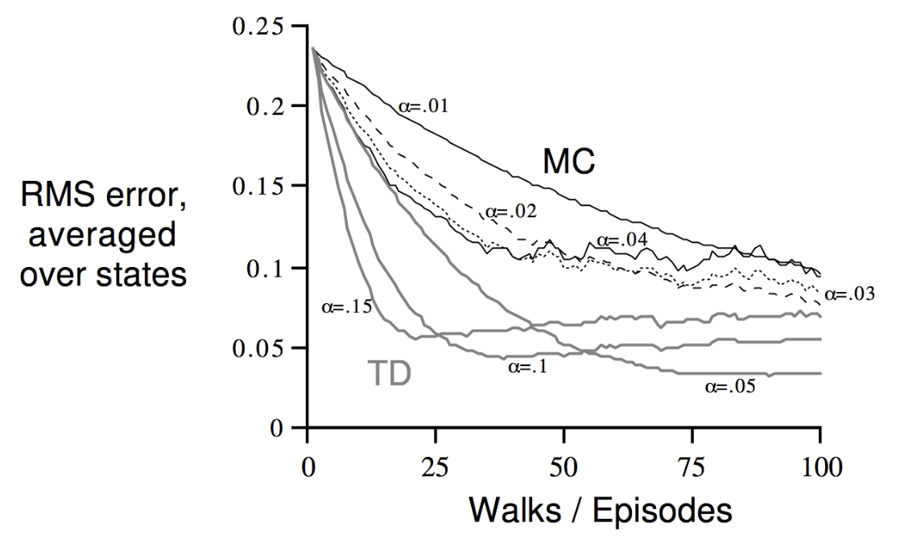
3.3 批量 MC 和 TD
如果我们无法不断地采样，手上只有一批有限数量的样本，那么根据这批样本做 MC 或 TD，能收敛到正确结果吗？
举一个简单的例子，假设 MDP 只有两个状态 A 和 B，无折扣，手上有 8 条轨迹：
- A, 0, B, 0
- B, 1
- B, 1
- B, 1
- B, 1
- B, 1
- B, 1
- B, 0
使用 MC 方法，我们将得到 \(V(A)=0,\,V(B)=0.75\)；而使用 TD 方法，我们将得到 \(V(A)=0.75,\,V(B)=0.75\).
可以看到，本质上来说：
MC 缩小价值函数和观察到的回报之间的均方误差
TD(0) 相当于先根据轨迹建立起最符合这些样本的 MDP，然后解这个 MDP 的最大似然
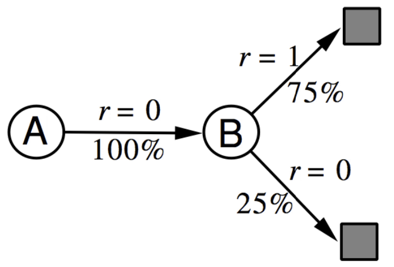
因为 TD 首先建立 MDP 模型，它更能够去利用马尔可夫性质，所以在马尔可夫环境下更有效；而 MC 不能利用马尔可夫性质，所以在非马尔可夫环境下同样有效。
3.4 小结
现在我们将 DP, MC 和 TD 解 MDP 总结一下：
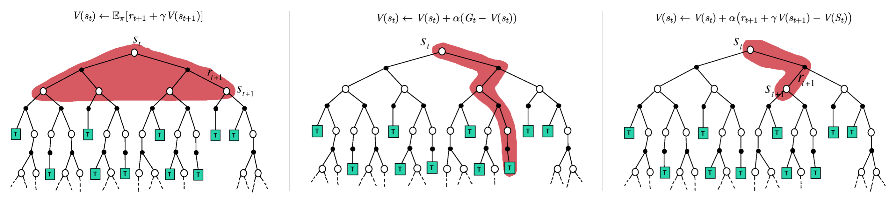
- DP 建立在我们已知整个 MDP 的基础上，我们也只向前走一步，但是严格按照概率对所有的可能进行精确计算
- MC 会采出一条到达终止状态的轨迹，然后更新沿途经过的状态
- TD 每次更新只需向前走一步，用下一步的价值函数更新当前状态
按照是否依靠采样近似（也即是否基于模型），可以将 MC 和 TD 划分为一类，DP 划分为一类；按照是否自举，可以将 DP 和 TD 划分为一类，MC 划分为一类。因此我们可以画一个 2D 的分类图：
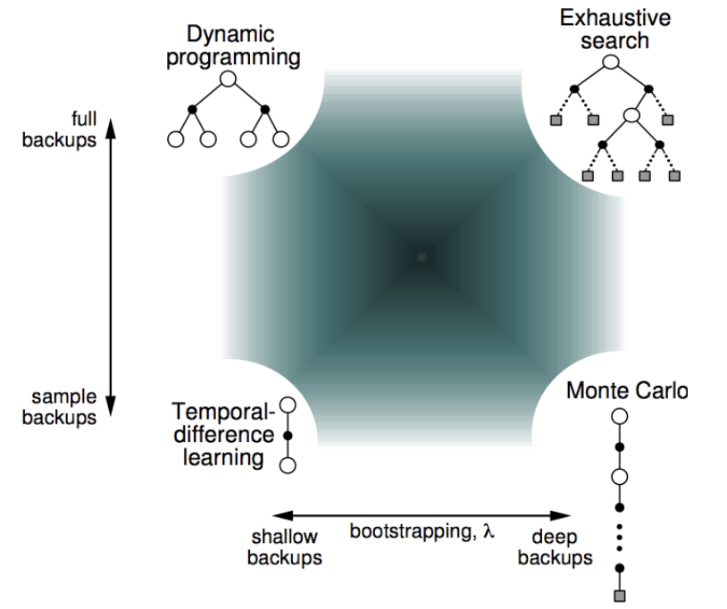
很容易注意到，有一个角落是没有讲过的——既不采样，也不自举，这其实对应着最暴力的穷尽搜索。但是我们还应注意到，在是否自举之间，其实存在灰色地带——我们可以往前多走几步，但是又不走到头，这就引出了 n-step TD.
4 TD(λ)
4.1 n-step TD
上一节的最后已经解释了 n-step TD 的基本思想：
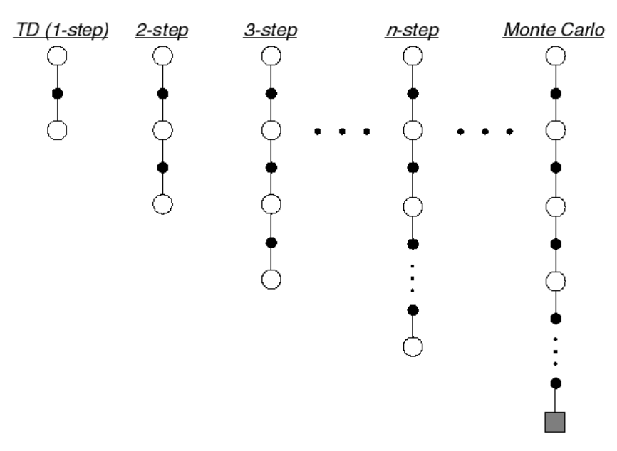
反映在公式中，即是：
\[ \begin{align} &G_t^{(1)}=r_{t+1}+\gamma V(s_{t+1})&&\text{TD}\\ &G_t^{(2)}=r_{t+1}+\gamma r_{t+2}+\gamma^2 V(s_{t+2})\\ &\;\vdots\\ &G_t^{(n)}=r_{t+1}+\gamma r_{t+2}+\cdots+\gamma ^{n-1}r_{t+n}+\gamma^nV(s_{t+n})&&\text{n-step TD}\\ &\;\vdots\\ &G_t^{(\infty)}=r_{t+1}+\gamma r_{t+2}+\cdots+\gamma^{t+T-1} r_T&&\text{MC} \end{align} \] 称 \(G_t^{(n)}\) 为 n 步回报。可以看见，TD 目标就是 1 步回报，而之前定义的回报就是这里的无穷步回报。
那么，仿照 TD 的更新，n-step TD 的更新方式为： \[ V(s_t)\gets V(s_t)+\alpha(G_t^{(n)}-V(s_t)) \] 前文说过，TD 是有偏低方差的，MC 是无偏高方差的，所以 n-step TD 自然是二者的折中。但 n 到底取多大最好呢？一个简单的想法是，既然我们不知道哪个 n 最好，那就干脆取多个 n 值算平均，这就引出了 TD(λ).
4.2 前向 TD(λ)
我们对所有 n 值按照几何级数做平均，称之为 λ-回报：
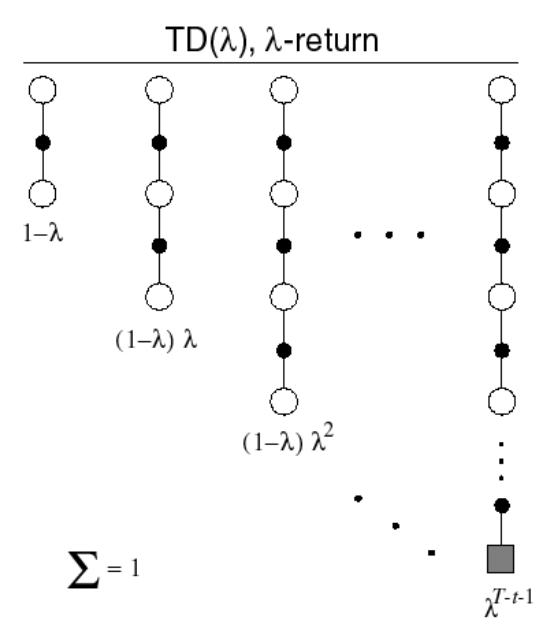
当然，最后终止的那一步不再是几何级数，而是 \(1\) 减去之前所有的系数之和。这里为了简便起见，没有把这一点体现在公式中： \[ G_t^\lambda=(1-\lambda)\sum_{n=1}^\infty\lambda^{n-1}G_t^{(n)} \] 更新方式变为： \[ V(s_t)\gets V(s_t)+\alpha (G_t^\lambda-V(s_t)) \] 当 \(\lambda=0\) 时，就是 TD；当 \(\lambda=1\) 时，就是 MC.
为了计算 \(G_t^\lambda\)，我们需要像 MC 一样采样完整的轨迹，将每一步的 \(G_t^{(n)}\) 计算出来，然后加权求和。这种方法称作前向 TD(λ)：
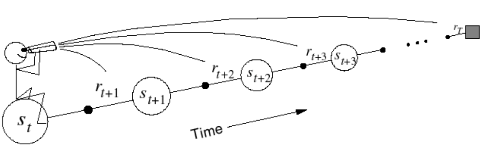
4.3 后向 TD(λ)
前向 TD(λ) 需要采样完整轨迹，因而只能做离线学习，有没有办法将其改进为在线学习呢？考虑在线学习时，当前状态会对后续的状态产生贡献（即加上奖励），但是对哪些状态产生贡献现在并不知道，所以我们可以引入一个变量将这个贡献暂存起来，等访问到后续状态后再更新，这就是后向 TD(λ).
首先引入资格迹 (eligibility traces)的概念。我们对每一个状态 \(s\) 维护一个值 \(E_t(s)\)，满足： \[ \begin{align} &E_0(s)=0\\ &E_t(s)=\gamma\lambda E_{t-1}(s)+\mathbf 1(s_t=s) \end{align} \] 在时刻 \(t\)，如果没有进入状态 \(s\)，则 \(E_t(s)\) 减少到 \(\gamma\lambda\) 倍的上一时刻值；否则，\(E_t(s)\) 有一个瞬时的 \(1\) 的增加：
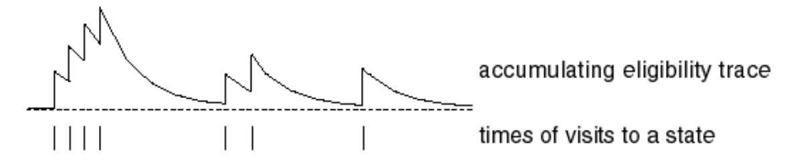
利用资格迹，我们在每个时刻对所有状态 \(s\) 依 TD 误差 \(\delta_t\) 和 \(E_t(s)\) 按比例对 \(V(s)\) 做更新，这样就能做到在线学习： \[ \begin{align} &\delta_t = r_{t+1}+\gamma V(s_{t+1})-V(s_t)\\ &V(s)\gets V(s)+\alpha\delta_tE_t(s),\quad \forall s\in \mathcal S \end{align} \]
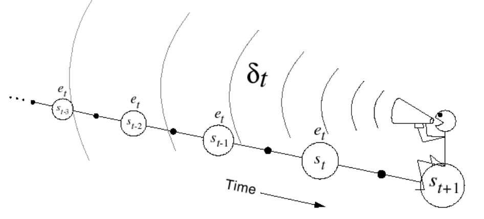
可以证明，前向 TD(λ) 与后向 TD(λ) 是完全等价的。
总而言之，前向 TD(λ) 提供理论依据，后向 TD(λ) 给出算法实现，实际应用中一般采用在线学习的后向 TD(λ) 方法。